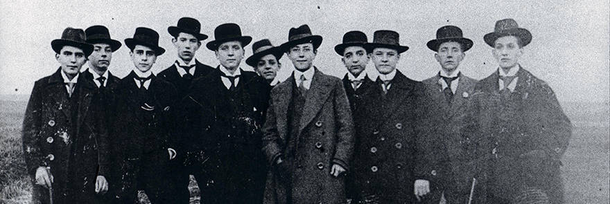

REPORT DATED 20/12/1909
A turbulent founding on 19/12/1909

Tumultuous scenes played out last evening in connection with the
foundation of ”Ballspiel-Verein Borussia 1909“ [Ball Sports Club
“Borussia 1909”] in the north east of Dortmund. Over 40 members of
the youth Catholic Holy Trinity, Flurstrasse, met at 1900 in the
”Zum Wildschutz“ restaurant at Oesterholzstrasse 60, with the
intention of founding ”BVB“ partly out of a love for sport but
also out of anger at chaplain Hubert Dewald who is responsible for
youth affairs in the trinity. Speaker and vice-president of the
fledgling club, Franz Jacobi, announced, ”I have been a member of
the Trinity Youth since 1902 and since 1906 we have been playing
on the ”Weissen Wiese“. We footballers have been systematically
attacked and defamed by our church since 1906. We can no longer
put up with this. This club is absolutely necessary.“ Father
Dewald tried to intervene personally to stop the founding without
success. Both he and his followers were denied entry, at times
forcibly. However, his appearance did see some 20 rebels back down
and so just ”18“ true Borussen took part in the foundation. By the
way, the name ”Borussia“ is leant from the Borussia brewery on the
street Steiger Strasse. The club colours: blue and white stripes
with a red inset, black shorts. The new club will now seek
admittance to the West German FA.
24/5/1919
BVB register their first binding constitution before the courts
BVB register their first binding constitution before the courts
The Ballspiel-Verein ”Borussia 1909“, Dortmund, a
member of the West German FA, the German FA and the German
Athletics Association, today registered its first club
constitution.
The club is committed to the betterment
of the people through the playing of football and other physical
games. Contained, amongst other things, in the constitution is the
following rule:
To miss a competitive game without
good reason will incur a 1 Reichsmark fine. Later arrival, again
when no good reason provided, incurs 50% of that sum as fine.
Leaving the field without permission of the team
leader will incur a 2RM fine. The team leader’s decision is to be
respected at all times. Players who choose not to follow his
instructions can be excluded by him from games. It is specifically
not allowed to smoke during games.
This last point is
of particular significance in the light of recent events. The
association magazine ”Körper und Geist” [Body and Soul] recently
reported that ”We take this opportunity to make grass sport
associations aware that they ought to give some time to observing
their own referees. Only recently, this correspondent witnessed a
competitive fixture where the referee calmly observed proceedings
whilst puffing on a cigar. What sort of an impression does this
make on players and spectators alike.“
8/9/1913
BVB game struck from the records – Goal the wrong size
The first team of BVB today played a home game on the ”Weissen
Wiese“ against VfB Dortmund. A pacey game finished with a 1-0 win
for Borussia. Wienke scored the winning goal however joy at the
win was short-lived. The referee, made aware of the problem by VfB
players, had a tape measure brought from the nearby home of farmer
Wubbecke in order to measure up both goals. One goal was 22cm too
small and so the game was annulled.
11/1/1913
Club members form teams
The board of BVB today came to a momentous decision at its meeting
at the ”Wildschutz“, Oesterholzstrasse 60. From this coming Friday
forward there will be public gatherings each week in order to
involve members more in sporting matters.
It is
proposed that at these meetings the captains of the men’s teams
would announce their selections for the upcoming games so that
they could be discussed and debated. Should any disagreements over
selection arise, the board would hold the casting vote.